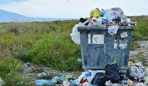

Smart Waste Management for Meru County
The samrt waste is a technology used for managaing, collecting and monitoring waste production and disposal.
How waste is managed.
Waste has been a major issue in many places for a long time.
This is due to many reasons like:
1.Late collection of the solid waste leading to bins overflows.
2.Waste collectors going to other routes which bins aren't filled thus wastage of resources.
3.Sometimes the Waste collectors use long routes to collect waste when there are other simple routes.
4.Sometimes the collectors choose a specific route always and particular days to visit
some specific places which waste may not
be full yet leave other places which need attention.
How untimely waste collection has led to bins overflows and bad smell.
by monitoring bin levels and assigning collectors on time.
Click the link below to view bin level
© copyright preserved
prepared by jmn publishers
email us @ adoredson1@gmail.com